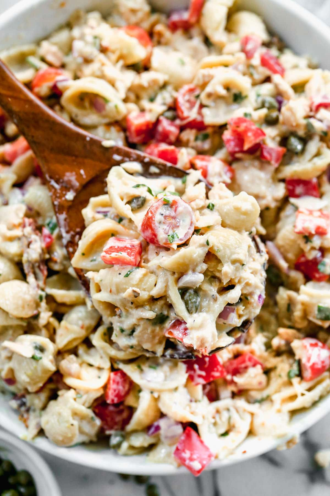

Pasta with tuna

Description
A tuna pasta salad with veggies, a duo of fresh and sun-dried tomatoes, fresh herbs, and a lemony Greek yogurt dressing, this creamy tuna pasta salad punches above its weight.
Ingredients
- Pasta
- Tuna
- Red Onion
- Tomatoes (cherry and dried ones)
- Red Bell Pepper
- Fresh parsley or basil
- Greek Yogurt Dressing
Steps
- Cook the pasta in a large pot, then drain and rinse.
- Whisk the dressing ingredients together.
- Add the tomatoes, onion, bell pepper, optionally capers and parsley to a large bowl.
- Stir the pasta and dressing.
- Flake the tuna into the bowl, tossing to combine. Refrigerate for at least 1 hour.